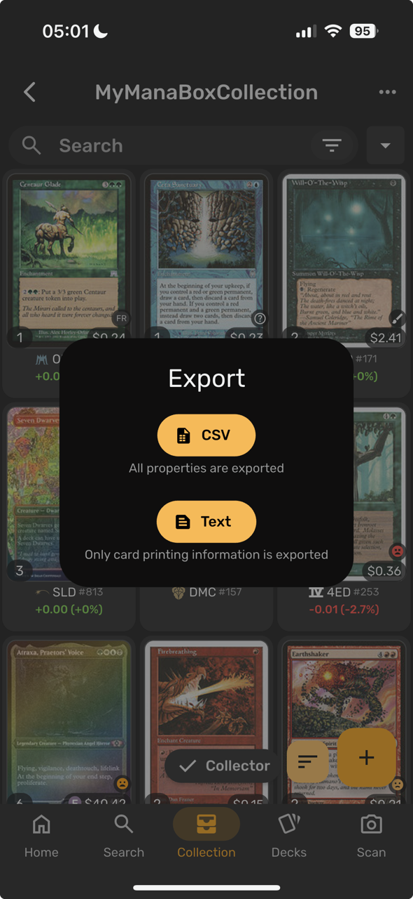

Already keep your cards in ManaBox, the phone app? You can bring them into ManaDesk easily, and send your decks and collections back to it. ManaBox and ManaDesk both use Scryfall's card data, so each card arrives as the exact printing you have.

| ManaBox | ManaDesk |
|---|---|
| Scryfall ID (or Name, Set, Collector number) | The exact printing |
| Quantity | Count |
| Foil (normal / foil / etched) | Finish |
| Condition | Condition: near mint and mint → NM, excellent → LP, good and light played → MP, played → HP, poor → DMG |
| Language | Language, when the card database has that printing (otherwise English, shown in yellow in the preview) |
| Purchase price | User Price (converted to your currency when possible) |
| Proxy | Proxy |
| Misprint, Altered, Signed | The misprint, altered and signed special tags |
| Added | The copy's date |
A full-collection export from ManaBox includes the binder of each card; ManaDesk imports all of them into the collection you chose.
Export a deck or collection with the ManaBox CSV format (see Exporting), then import the file in ManaBox. The Scryfall ID tells ManaBox the exact printing.
See also: Importing cards · Exporting